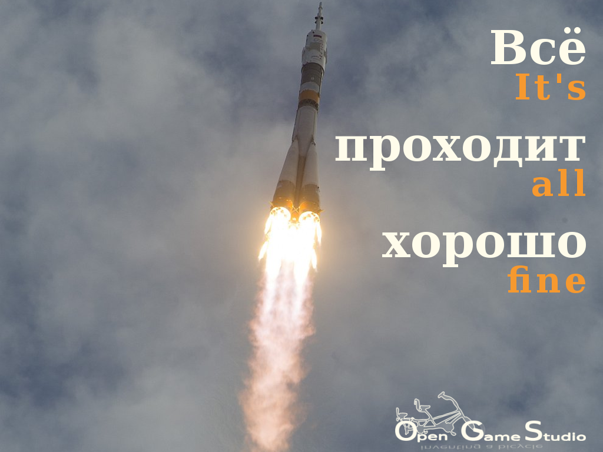

2017-04-07 00:00

This article describes creation of the first four OpenSceneGraph tutorials in March 2017.
The first four OpenSceneGraph tutorials explain how to create a cube model with Blender and display the model under Linux, macOS, or Windows using OpenSceneGraph tool called osgviewer.
The whole process of creating a single tutorial turned out to be pretty daunting because it includes several tasks:
Some of those tasks had to be repeated multiple times until the combination of video, text, and article was clear and logical.
Overall, it took us 30 hours to create the tutorials. The whole process gave us a lot of experience, which will help us in shaping learning materials for our technologies in the future. We don't know how they will look like exactly, but they will definitely be better.
That's it for describing creation of the first four OpenSceneGraph tutorials in March 2017.